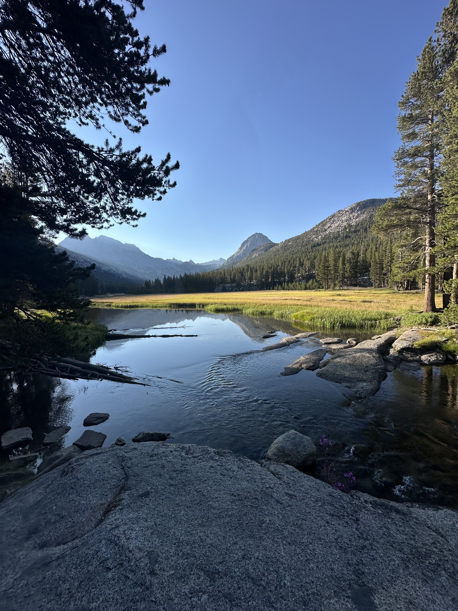
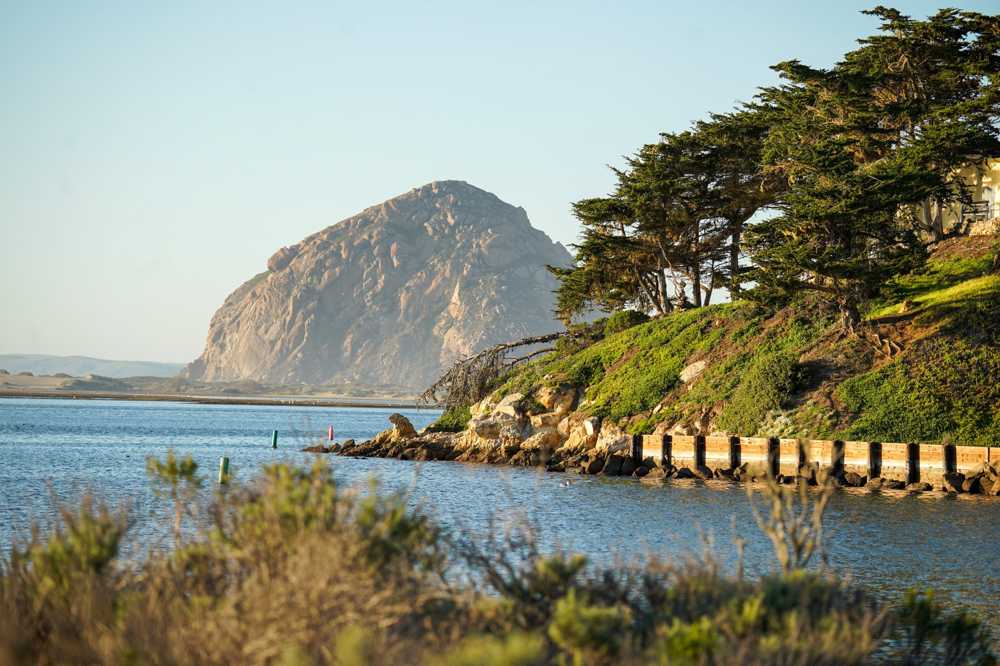
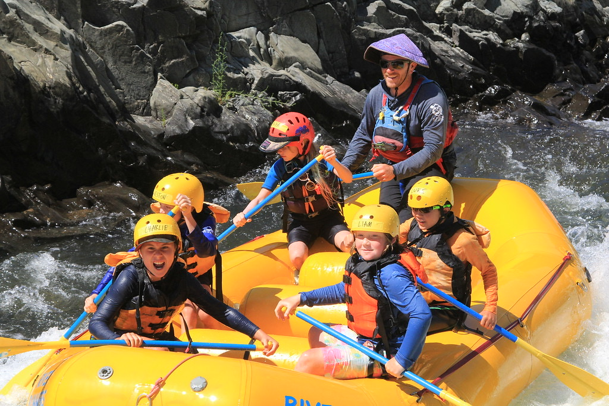

Kerby Cove Basecamp
A local overnight experience designed to introduce students to camping, outdoor living, and exploration in one of the Bay Area's most remarkable coastal landscapes.
Students may explore:
- Camp setup and outdoor living skills
- Hiking and coastal exploration
- Teamwork and community building
- Leave No Trace principles
- Natural and cultural history of the Marin Headlands

High Sierra Backpacking
A multi-day wilderness experience that gives students the opportunity to travel through the Sierra Nevada while learning the skills needed to live and travel responsibly in the backcountry.
Students may explore:
- Backpacking and wilderness travel
- Navigation and route finding
- Backcountry cooking and campcraft
- Leadership and group decision-making
- Resilience, independence, and teamwork
- Leave No Trace ethics

Morro Bay Sea Kayaking
A coastal paddling experience that introduces students to sea kayaking while exploring the ecology and unique marine environment of Morro Bay.
Students may explore:
- Sea kayak paddling techniques
- Boat handling and water safety
- Navigation and weather awareness
- Marine and estuary ecology
- Teamwork and communication on the water

Whitewater Guide School
A hands-on introduction to the skills, responsibilities, teamwork, and decision-making involved in whitewater raft guiding.
Guide school instruction is led by seasoned river guides with extensive professional experience and current wilderness medical and swiftwater rescue training.
Students may explore:
- Rafting fundamentals and paddle commands
- Boat handling and river navigation
- River safety and hazard awareness
- Guide communication and leadership
- Team-based problem solving
- Introduction to rescue concepts and river systems